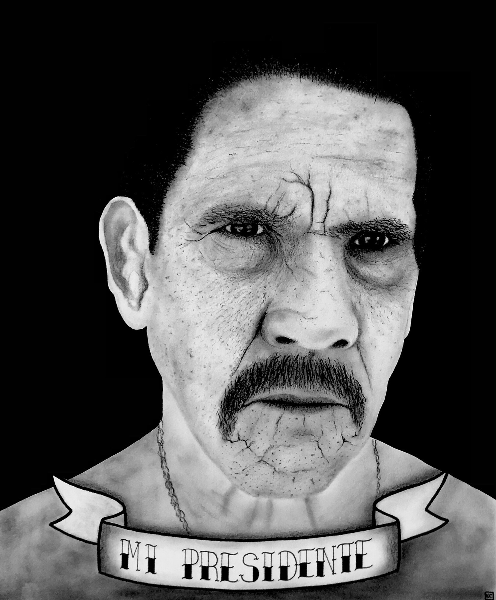

My Art
 Hopf Fibration With Pineapple Scales, 2016
Hopf Fibration With Pineapple Scales, 2016
22x28 inches, Ink pen on poster board
This piece was inspired by the hopf fibration, visualized as a stereographic projection
of the 3-sphere into R3. I loved this shape and how it allows the viewer to "see"
in higher dimensions, and coincidentally, it reminded me of a pineapple.
More about the hopf fibration.
High-res close-ups:


 Jason Momoa, 2018
Jason Momoa, 2018
Charcoal on paper
This is a drawing I did of Jason Momoa. I was trying to get more practice in
charcoals and I was really taken with how dramatic his countenance was.

Mi Presidente, 2018
Charcoal and ink on paper
This is a drawing I did of Danny Trejo. To be very clear, I do not believe any
high-ranking government position should be considered entry-level. This is from
an elaborate fantasy I have where my life is a Robert Rodriguez movie and Danny
Trejo happens to be the president of the United States.
 The Chemist, 2016
The Chemist, 2016
Scratchboard, paper, pencil, pen
In 2016, I did a series of drawings of my friends at work in various class subjects.
This is my friend Christian in chemistry class.
 Cat, 2018
Cat, 2018
Acrylic and watercolor, 4x4 inches
I painted this dashing fellow on a small index card in 2016, as part of a series
of small cards I intended to hang around my dorm room like Polaroids.
 Jupiter, 2018
Jupiter, 2018
Pen and watercolor, 4x4 inches
This is another of my fake Polaroids, this time of Jupiter.
 Lionfish, 2018
Lionfish, 2018
Pen and watercolor, 4x4 inches
This "fake Polaroid" was of a lionfish I saw at my favorite place, the zoo.
 Cards, 2018
Cards, 2018
Pen and watercolor, 4x4 inches
This "fake Polaroid" was a simple exercise in copying what I saw in front of
me: a couple loose playing cards.